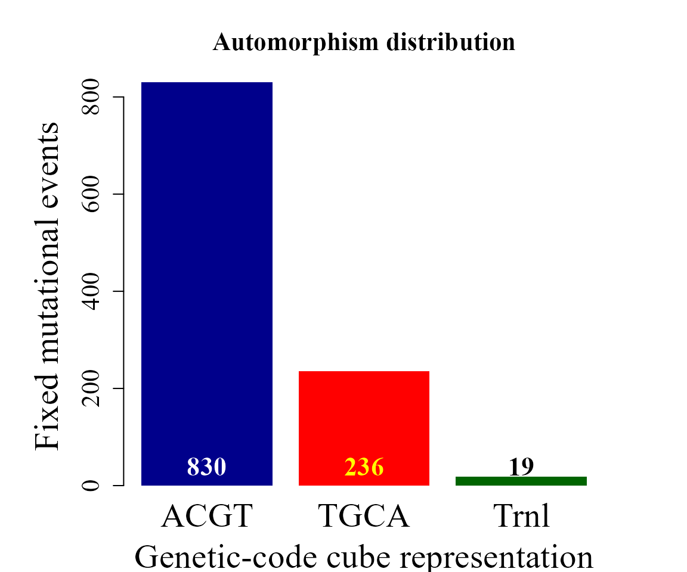
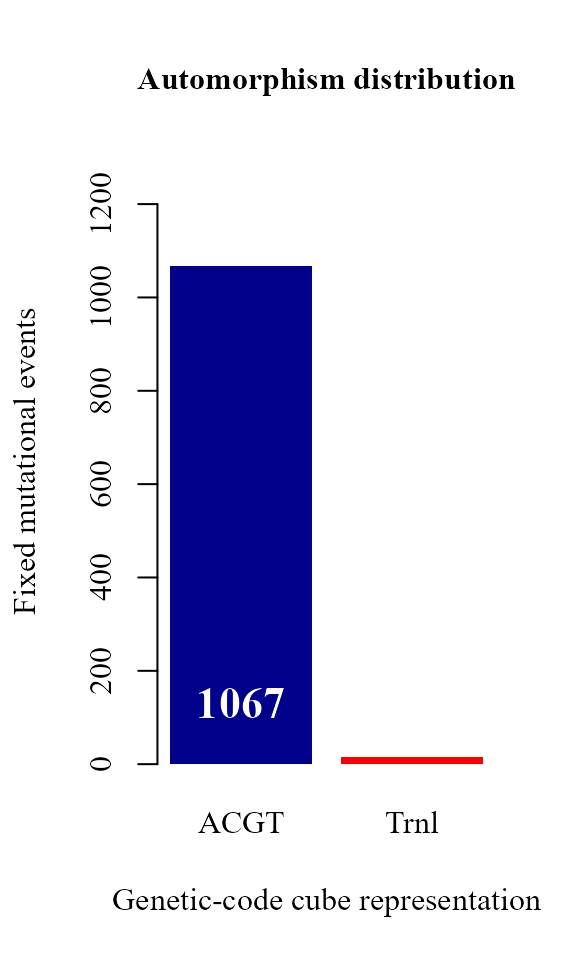

Get started-with GenomAutomorphism
Robersy Sanchez
Department of Biology. Pennsylvania State University, University Park, PA 16802rus547@psu.edu
28 April 2024
Source:vignettes/GenomAutomorphism.Rmd
GenomAutomorphism.RmdAbstract
A fast introduction into the analysis of DNA mutational events by means of automorphisms between two DNA sequences algebraically represented as Abelian finite group.
GenomAutomorphism Overview
This is a R package to compute the automorphisms between pairwise aligned DNA sequences represented as elements from a Genomic Abelian group as described in reference (1). In a general scenario, whole chromosomes or genomic regions from a population (from any species or close related species) can be algebraically represented as a direct sum of cyclic groups or more specifically Abelian p-groups. Basically, we propose the representation of multiple sequence alignments (MSA) of length N as a finite Abelian group created by the direct sum of Abelian group of prime-power order:
\[ \qquad G = (\mathbb{Z}_{p^{\alpha_{1}}_1})^{n_1} \oplus (\mathbb{Z}_{p^{\alpha_{2}}_1})^{n_2} \oplus \dots \oplus (\mathbb{Z}_{p^{\alpha_{k}}_k})^{n_k} \]
Where, the \(p_i\)’s are prime numbers, \(\alpha_i \in \mathbb{N}\) and \(\mathbb{Z}_{p^{\alpha_{i}}_i}\) is the group of integer modulo \(p^{\alpha_{i}}_i\).
For the purpose of estimating the automorphism between two aligned DNA sequences, \(p^{\alpha_{i}}_i \in \{5, 2^6, 5^3 \}\).
Installing GenomAutomorphism
GenomAutomorphism uses several R dependencies, which can
be installed as follows:
if (!requireNamespace("BiocManager"))
install.packages("BiocManager")
BiocManager::install(c("Biostrings", "GenomicRanges", "S4Vectors",
"BiocParallel", "GenomeInfoDb", "BiocGenerics", "numbers", "devtools",
"doParallel", "data.table", "foreach","parallel"), dependencies = TRUE)GenomAutomorphism can be installed as follows:
if (!require("BiocManager", quietly = TRUE))
install.packages("BiocManager")
BiocManager::install("GenomAutomorphism")You can install GenomAutomorphism package from GitHub as
follow
BiocManager::install('genomaths/GenomAutomorphism')You can install GenomAutomorphism ‘beta’ package with
last updating (which would differ from Bioconductor version) from GitHub
as follow:
BiocManager::install('genomaths/GenomAutomorphism_beta')Automorphisms
Herein, automorphisms are considered algebraic descriptions of mutational event observed in codon sequences represented on different Abelian groups. In particular, as described in references (3-4), for each representation of the codon set on a defined Abelian group there are 24 possible isomorphic Abelian groups. These Abelian groups can be labeled based on the DNA base-order used to generate them. The set of 24 Abelian groups can be described as a group isomorphic to the symmetric group of degree four (\(S_4\), see reference (4)).
For further support about the symmetric group on the 24 Abelian group of genetic-code cubes, users can also see Symmetric Group of the Genetic-CodeCubes., specifically the Mathematica notebook IntroductionToZ5GeneticCodeVectorSpace.nb and interact with it using Wolfram Player, freely available (for Windows and Linux OS) at, https://www.wolfram.com/player/.
Read the alignment FASTA and encode the sequences
A pairwise sequence alignment of protein coding regions SARS coronavirus GZ02 (GenBank: AY390556.1) and Bat SARS-like coronavirus isolate Rs7327 (GenBank: KY417151.1) is provided with the package.
data(covid_aln, package = "GenomAutomorphism")
covid_aln
#> DNAMultipleAlignment with 2 rows and 29166 columns
#> aln names
#> [1] ATGGAGAGCCTTGTTCTTGGTGTCAACGAGAAAACACACGTCCAAC...CAAAATTCCATGAGTGGAGCTTCTGCTGATTCAACTCAGGCATAA lcl|AY390556.1_cd...
#> [2] ATGGAGAGCCTTGTTCTTGGTGTCAACGAGAAAACACACGTCCAAC...CAAAATTCCATGAGTGGAGCTTCTGCTGATTCAACTCAGGCATAA lcl|KY417151.1_cd...Group representations
Group operations defined on the sets of DNA bases and codons are associated to physicochemical or/and biophysical relationships between DNA bases and between codons and aminoacids. In other words, a proper definition of a group operation on the set of bases or on the set of codons will encode the physicochemical or/and biophysical relationships between the set’s elements. Thus, by group operations defined on the set of bases or on the set of codons, we understand an encoding applied to represent specified physicochemical or/and biophysical relationships as group operations between the elements of the set. Then, we shall say that such an encoding permits the representation of DNA bases, codons, genes, and genomic sequences as elements from algebraic structures.
The DNA base set can be represented in 24 possible base orders, which leads to 24 possible representations of the genetic code. Each genetic code representation base-triplets on the Galois field GF(4) (or in GF(5)) leads to genetic code vector 3D-space, which is mathematically equivalent to a cube inserted in the 3D space (1). Each cube is denoted according to the corresponding base order.
Given a base-order, say ‘ACGT’, the Abelian group defined on this ordered set is isomorphic to the Abelian group defined on the set of integers modulo 4 (\(\mathbb{Z}_{4}\)). In practical terms, this is equivalent to replace each DNA base by the corresponding integer element. The base replacement in cube “ACGT and group”Z4” (\(\mathbb{Z}_{4}\)) is:
base2int("ACGT", group = "Z4", cube = "ACGT")
#> [1] 0 1 2 3The base replacement in cube “ACGT and group ‘Z5’ (\(\mathbb{Z}_{5}\)):
base2int("ACGT", group = "Z5", cube = "ACGT")
#> [1] 1 2 3 4After the DNA sequence is read, the corresponding codon sequences can be represented in the Abelian group \(\mathbb{Z}_{64}\) (i.e., the set of integers remainder modulo 64). The codon coordinates are requested on the cube ACGT. Following reference (4)), cubes are labeled based on the order of DNA bases used to define the sum operation.
codons <- codon_coord(
codon = covid_aln,
cube = "ACGT",
group = "Z64",
chr = 1L,
strand = "+",
start = 1,
end = 750)
codons
#> CodonGroup object with 250 ranges and 4 metadata columns:
#> seqnames ranges strand | seq1 seq2 coord1 coord2
#> <Rle> <IRanges> <Rle> | <character> <character> <character> <character>
#> [1] 1 1 + | ATG ATG 50 50
#> [2] 1 2 + | GAG GAG 10 10
#> [3] 1 3 + | AGC AGC 33 33
#> [4] 1 4 + | CTT CTT 55 55
#> [5] 1 5 + | GTT GTT 59 59
#> ... ... ... ... . ... ... ... ...
#> [246] 1 246 + | GAT GAT 11 11
#> [247] 1 247 + | AAG AAG 2 2
#> [248] 1 248 + | AGC AGC 33 33
#> [249] 1 249 + | TAC TAT 13 15
#> [250] 1 250 + | GAG GAG 10 10
#> -------
#> seqinfo: 1 sequence from an unspecified genome; no seqlengthsThe codon sequences (seq1 and seq2) with their corresponding coordinates (left) are returned, as well as the coordinated representation on \(\mathbb{Z}_{64}\) (coord1 and coord2).
“Dual” genetic-code cubes
The particular interest are the coordinate representation on “dual” genetic-code cubes. These are cubes where codons with complementary base pairs have the same coordinates in the corresponding cubes, as shown in reference (4)). Each pair of “dual” cubes integrates a group.
For example, let’s consider the complementary codons “ACG” and “TGC”, with complementary base pairs: A::T, C:::G, and G:::C, where symbol “:” denotes the hydrogen bonds between the bases.
x0 <- c("ACG", "TGC")
x1 <- DNAStringSet(x0)
x1
#> DNAStringSet object of length 2:
#> width seq
#> [1] 3 ACG
#> [2] 3 TGCTheir representations on the dual cubes “ACGT” and “TGCA” on \(\mathbb{Z}_{4}\) are:
x2 <- base_coord(x1, cube = "ACGT")
x2
#> BaseGroup object with 3 ranges and 4 metadata columns:
#> seqnames ranges strand | seq1 seq2 coord1 coord2
#> <Rle> <IRanges> <Rle> | <character> <character> <numeric> <numeric>
#> [1] 1 1 + | A T 0 3
#> [2] 1 2 + | C G 1 2
#> [3] 1 3 + | G C 2 1
#> -------
#> seqinfo: 1 sequence from an unspecified genome; no seqlengths
x2. <- base_coord(x1, cube = "TGCA")
x2.
#> BaseGroup object with 3 ranges and 4 metadata columns:
#> seqnames ranges strand | seq1 seq2 coord1 coord2
#> <Rle> <IRanges> <Rle> | <character> <character> <numeric> <numeric>
#> [1] 1 1 + | A T 3 0
#> [2] 1 2 + | C G 2 1
#> [3] 1 3 + | G C 1 2
#> -------
#> seqinfo: 1 sequence from an unspecified genome; no seqlengthsThe sum of base coordinates modulo \(\mathbb{Z}_{4}\) is 3.
## cube "ACGT"
(x2$coord1 + x2$coord2) %% 4
#> [1] 3 3 3
## cube "TGCA"
(x2.$coord1 + x2.$coord2) %% 4
#> [1] 3 3 3The same result for the same codon on different cubes
## Codon ACG
(x2$coord1 + x2.$coord1) %% 4
#> [1] 3 3 3
## Codon TGC
(x2$coord2 + x2.$coord2) %% 4
#> [1] 3 3 3Their codon representation on \(\mathbb{Z}_{64}\) are:
## cube ACGT
x3 <- codon_coord(codon = x2, group = "Z64")
x3
#> CodonGroup object with 1 range and 4 metadata columns:
#> seqnames ranges strand | seq1 seq2 coord1 coord2
#> <Rle> <IRanges> <Rle> | <character> <character> <character> <character>
#> [1] 1 1 + | ACG TGC 18 45
#> -------
#> seqinfo: 1 sequence from an unspecified genome; no seqlengths
## cube TGCA
x3. <- codon_coord(codon = x2., group = "Z64")
x3.
#> CodonGroup object with 1 range and 4 metadata columns:
#> seqnames ranges strand | seq1 seq2 coord1 coord2
#> <Rle> <IRanges> <Rle> | <character> <character> <character> <character>
#> [1] 1 1 + | ACG TGC 45 18
#> -------
#> seqinfo: 1 sequence from an unspecified genome; no seqlengthsThe sum of base coordinates modulo \(\mathbb{Z}_{64}\) is 63.
## cube "ACGT"
(as.numeric(x3$coord1) + as.numeric(x3$coord2)) %% 64
#> [1] 63
## cube "TGCA"
(as.numeric(x3.$coord1) + as.numeric(x3.$coord2)) %% 64
#> [1] 63The same result for the same codon on different cubes
## Codon ACG
(as.numeric(x3$coord1) + as.numeric(x3.$coord1)) %% 64
#> [1] 63
## Codon TGC
(as.numeric(x3$coord2) + as.numeric(x3.$coord2)) %% 64
#> [1] 63Automorphisms on \(\mathbb{Z}_{64}\)
Automorphisms can be computed starting directly from the FASTA file. Notice that we can work only with genomic regions of our interest by giving the start and end alignment coordinates. In \(\mathbb{Z}_{64}\) automorphisms are described as functions \(f(x) = k\,x\quad mod\,64\), where \(k\) and \(x\) are elements from the set of integers modulo 64. Below, in function automorphism three important arguments are given values: group = “Z64”, cube = c(“ACGT”, “TGCA”), and cube_alt = c(“CATG”, “GTAC”).
In groups “Z64” and “Z125” not all the mutational events can be described as automorphisms from a given cube. The analysis of automorphisms is then accomplished in the set of dual genetic-code cubes. A character string denoting pairs of dual genetic-code cubes, is given as argument for cube. Setting for group specifies on which group the automorphisms will be computed. These groups can be: “Z5”, “Z64”, “Z125”, and “Z5^3”.
If automorphisms are not found in first set of dual cubes, then the algorithm search for automorphisms in a alternative set of dual cubes.
autm <- automorphisms(
seqs = covid_aln,
group = "Z64",
cube = c("ACGT", "TGCA"),
cube_alt = c("CATG", "GTAC"),
start = 1,
end = 750,
verbose = FALSE)
autm
#> Automorphism object with 250 ranges and 8 metadata columns:
#> seqnames ranges strand | seq1 seq2 aa1 aa2 coord1 coord2 autm
#> <Rle> <IRanges> <Rle> | <character> <character> <character> <character> <numeric> <numeric> <numeric>
#> [1] 1 1 + | ATG ATG M M 50 50 1
#> [2] 1 2 + | GAG GAG E E 10 10 1
#> [3] 1 3 + | AGC AGC S S 33 33 1
#> [4] 1 4 + | CTT CTT L L 55 55 1
#> [5] 1 5 + | GTT GTT V V 59 59 1
#> ... ... ... ... . ... ... ... ... ... ... ...
#> [246] 1 246 + | GAT GAT D D 11 11 1
#> [247] 1 247 + | AAG AAG K K 2 2 1
#> [248] 1 248 + | AGC AGC S S 33 33 1
#> [249] 1 249 + | TAC TAT Y Y 13 15 11
#> [250] 1 250 + | GAG GAG E E 10 10 1
#> cube
#> <character>
#> [1] ACGT
#> [2] ACGT
#> [3] ACGT
#> [4] ACGT
#> [5] ACGT
#> ... ...
#> [246] ACGT
#> [247] ACGT
#> [248] ACGT
#> [249] ACGT
#> [250] ACGT
#> -------
#> seqinfo: 1 sequence from an unspecified genome; no seqlengthsObserve that two new columns were added, the automorphism coefficient \(k\) (named as autm) and the genetic-code cube where the automorphism was found. By convention the DNA sequence is given for the positive strand. Since the dual cube of “ACGT” corresponds to the complementary base order TGCA, automorphisms described by the cube TGCA represent mutational events affecting the DNA negative strand (-).
The last result can be summarized by gene regions as follow:
aut_range <- automorphismByRanges(autm)
aut_range
#> GRanges object with 9 ranges and 1 metadata column:
#> seqnames ranges strand | cube
#> <Rle> <IRanges> <Rle> | <character>
#> [1] 1 1-102 + | ACGT
#> [2] 1 103 - | TGCA
#> [3] 1 104-105 + | ACGT
#> [4] 1 106 - | TGCA
#> [5] 1 107-201 + | ACGT
#> [6] 1 202 - | TGCA
#> [7] 1 203-205 + | ACGT
#> [8] 1 206 - | TGCA
#> [9] 1 207-250 + | ACGT
#> -------
#> seqinfo: 1 sequence from an unspecified genome; no seqlengthsThat is, function automorphismByRanges permits the classification of the pairwise alignment of protein-coding sub-regions based on the mutational events observed on it quantitatively represented as automorphisms on genetic-code cubes.
Searching for automorphisms on \(\mathbb{Z}_{64}\) permits us a quantitative differentiation between mutational events at different codon positions from a given DNA protein-encoding region. As shown in reference (4) a set of different cubes can be applied to describe the best evolutionary aminoacid scale highly correlated with aminoacid physicochemical properties describing the observed evolutionary process in a given protein.
More information about this subject can be found in the supporting material from reference (4)) at GitHub GenomeAlgebra_SymmetricGroup, particularly by interacting with the Mathematica notebook Genetic-Code-Scales_of_Amino-Acids.nb.
Automorphisms between whole genomes of SARS-CoV-2 related coronaviruses
Next, the automorphism for the whole pairwise alignment of SARS-CoV-2 related coronaviruses:
## Do not need to run it.
covid_autm <- automorphisms(
seq = covid_aln,
group = "Z64",
cube = c("ACGT", "TGCA"),
cube_alt = c("CATG", "GTAC"),
verbose = FALSE)This data is available with the package
data(covid_autm, package = "GenomAutomorphism")
covid_autm
#> Automorphism object with 9722 ranges and 8 metadata columns:
#> seqnames ranges strand | seq1 seq2 aa1 aa2 coord1 coord2 autm
#> <Rle> <IRanges> <Rle> | <character> <character> <character> <character> <numeric> <numeric> <numeric>
#> [1] 1 1 + | ATG ATG M M 50 50 1
#> [2] 1 2 + | GAG GAG E E 10 10 1
#> [3] 1 3 + | AGC AGC S S 33 33 1
#> [4] 1 4 + | CTT CTT L L 55 55 1
#> [5] 1 5 + | GTT GTT V V 59 59 1
#> ... ... ... ... . ... ... ... ... ... ... ...
#> [9718] 1 9718 + | TCA TCA S S 28 28 1
#> [9719] 1 9719 + | ACT ACT T T 19 19 1
#> [9720] 1 9720 + | CAG CAG Q Q 6 6 1
#> [9721] 1 9721 + | GCA GCA A A 24 24 1
#> [9722] 1 9722 + | TAA TAA * * 12 12 1
#> cube
#> <character>
#> [1] ACGT
#> [2] ACGT
#> [3] ACGT
#> [4] ACGT
#> [5] ACGT
#> ... ...
#> [9718] ACGT
#> [9719] ACGT
#> [9720] ACGT
#> [9721] ACGT
#> [9722] ACGT
#> -------
#> seqinfo: 1 sequence from an unspecified genome; no seqlengthsAnd the summary by range
aut_range <- automorphismByRanges(covid_autm)
aut_range
#> GRanges object with 460 ranges and 1 metadata column:
#> seqnames ranges strand | cube
#> <Rle> <IRanges> <Rle> | <character>
#> [1] 1 1-102 + | ACGT
#> [2] 1 103 - | TGCA
#> [3] 1 104-105 + | ACGT
#> [4] 1 106 - | TGCA
#> [5] 1 107-201 + | ACGT
#> ... ... ... ... . ...
#> [456] 1 9577-9608 + | ACGT
#> [457] 1 9609 - | TGCA
#> [458] 1 9610-9674 + | ACGT
#> [459] 1 9675 - | TGCA
#> [460] 1 9676-9722 + | ACGT
#> -------
#> seqinfo: 1 sequence from an unspecified genome; no seqlengthsRegions no described by automorphism can be described as translations (labeled “Trnl”) and they can be shown as follow:
idx = which(covid_autm$cube == "Trnl")
covid_autm[ idx ]
#> Automorphism object with 19 ranges and 8 metadata columns:
#> seqnames ranges strand | seq1 seq2 aa1 aa2 coord1 coord2 autm
#> <Rle> <IRanges> <Rle> | <character> <character> <character> <character> <numeric> <numeric> <numeric>
#> [1] 1 916 + | AAC AAA N K 1 0 0
#> [2] 1 944 + | --- CCG - P NA 22 0
#> [3] 1 971 + | ACA --- T - 16 NA 0
#> [4] 1 7077 + | --- AAA - K NA 0 0
#> [5] 1 9109 + | AAT AAA N K 3 0 0
#> ... ... ... ... . ... ... ... ... ... ... ...
#> [15] 1 9277 + | CTT --- L - 55 NA 0
#> [16] 1 9278 + | CAT --- H - 7 NA 0
#> [17] 1 9279 + | GAA --- E - 8 NA 0
#> [18] 1 9295 + | AAA --- K - 0 NA 0
#> [19] 1 9296 + | CGA --- R - 36 NA 0
#> cube
#> <character>
#> [1] Trnl
#> [2] Trnl
#> [3] Trnl
#> [4] Trnl
#> [5] Trnl
#> ... ...
#> [15] Trnl
#> [16] Trnl
#> [17] Trnl
#> [18] Trnl
#> [19] Trnl
#> -------
#> seqinfo: 1 sequence from an unspecified genome; no seqlengthsThese codon positions cover insertion-deletion (indel) mutational events. The wholes regions can be summarized typing:
idx = which(aut_range$cube == "Trnl")
aut_range[ idx ]
#> GRanges object with 13 ranges and 1 metadata column:
#> seqnames ranges strand | cube
#> <Rle> <IRanges> <Rle> | <character>
#> [1] 1 916 + | Trnl
#> [2] 1 944 + | Trnl
#> [3] 1 971 + | Trnl
#> [4] 1 7077 + | Trnl
#> [5] 1 9109 + | Trnl
#> ... ... ... ... . ...
#> [9] 1 9244-9245 + | Trnl
#> [10] 1 9247 + | Trnl
#> [11] 1 9257 + | Trnl
#> [12] 1 9277-9279 + | Trnl
#> [13] 1 9295-9296 + | Trnl
#> -------
#> seqinfo: 1 sequence from an unspecified genome; no seqlengthsOnly one indel mutation was found in the region where the spike glycoprotein is located: 7076 - 8331. That is, the pairwise alignment of SARS coronavirus GZ02 and Bat SARS-like coronavirus (bat-SL-CoVZC45) reveals 8 single indel mutational events, four regions with two indel mutations and one region with 3 indel mutations.
data.frame(aut_range[idx])
#> seqnames start end width strand cube
#> 1 1 916 916 1 + Trnl
#> 2 1 944 944 1 + Trnl
#> 3 1 971 971 1 + Trnl
#> 4 1 7077 7077 1 + Trnl
#> 5 1 9109 9109 1 + Trnl
#> 6 1 9188 9189 2 + Trnl
#> 7 1 9230 9230 1 + Trnl
#> 8 1 9234 9235 2 + Trnl
#> 9 1 9244 9245 2 + Trnl
#> 10 1 9247 9247 1 + Trnl
#> 11 1 9257 9257 1 + Trnl
#> 12 1 9277 9279 3 + Trnl
#> 13 1 9295 9296 2 + Trnl
## region width
width(aut_range[ idx ])
#> [1] 1 1 1 1 1 2 1 2 2 1 1 3 2In general, indel mutational event can be modeled as translations on \(\mathbb{Z}_{64}\).
Bar plot automorphism distribution by cubes
The automorphism distribution by cubes can be summarized in the bar-plot graphic
counts <- table(covid_autm$cube[ covid_autm$autm != 1 |
is.na(covid_autm$autm) ])
par(family = "serif", cex = 0.9, font = 2, mar=c(4,6,4,4))
barplot(counts, main="Automorphism distribution",
xlab="Genetic-code cube representation",
ylab="Fixed mutational events",
col=c("darkblue","red", "darkgreen"),
border = NA, axes = FALSE,
cex.lab = 2, cex.main = 1.5, cex.names = 2)
axis(2, at = c(0, 200, 400, 600, 800), cex.axis = 1.5)
mtext(side = 1,line = -1.5, at = c(0.7, 1.9, 3.1, 4.3, 5.5),
text = paste0( counts ), cex = 1.4,
col = c("white","yellow", "black"))
Grouping automorphism by automorphism’s coefficients. Types of mutations
autby_coef <- automorphism_bycoef(covid_autm)
autby_coef <- autby_coef[ autby_coef$autm != 1 & autby_coef$autm != -1 ]Barplot of frequency of mutation types greater than 2.
counts <- table(autby_coef$mut_type)
counts <- sort(counts, decreasing = TRUE)
count. <- counts[ counts > 2 ]
par(family = "serif", cex.axis = 2, font = 2, las = 1,
cex.main = 1.4, mar = c(6,2,4,4))
barplot(count., main="Automorphism distribution per Mutation type",
col = colorRampPalette(c("red", "yellow", "blue"))(36),
border = NA, axes = FALSE,las=2)
axis(side = 2, cex.axis = 2, line = -1.8 )Every single base mutational event across the MSA was classified according IUPAC nomenclature: 1) According to the number of hydrogen bonds (on DNA/RNA double helix): strong S={C, G} (three hydrogen bonds) and weak W={A, U} (two hydrogen bonds). According to the chemical type: purines R={A, G} and pyrimidines Y={C, U}. 3). According to the presence of amino or keto groups on the base rings: amino M={C, A} and keto K={G, T}. Constant (hold) base positions were labeled with letter H. So, codon positions labeled as HKH means that the first and third bases remains constant and mutational events between bases G and T were found in the MSA.
counts
#>
#> HHY HHR HHW YHH HHK HHM RHH HRH HYH --- HHS MHH WHH HMH KHH HYW YHW RHK RHY WHW YHM YHY HKH HMR HRR HRY HWH KHW RYY YHK
#> 425 189 89 34 32 25 24 18 18 16 13 12 11 7 6 5 5 4 4 4 4 4 3 3 3 3 3 3 3 3
#> YHR HMW HYK KHY KSW MHK MHW MRH RHM RHR RHW RKW RMH RMW RRY RSW RYH RYW SHH SHW SRH WMH WMS WSY YWH HKK HKR HMK HMY HSR
#> 3 2 2 2 2 2 2 2 2 2 2 2 2 2 2 2 2 2 2 2 2 2 2 2 2 1 1 1 1 1
#> HWS HWW HWY HYR HYY KHK KHR KKS KMH KMW KRK KRY KSH MHR MHS MKM MMM MRM MWH MWM MWS MWW MYY RMY RRK RRM RSK RYK SHM SHY
#> 1 1 1 1 1 1 1 1 1 1 1 1 1 1 1 1 1 1 1 1 1 1 1 1 1 1 1 1 1 1
#> SKY SMW SRM SWR SWY SYH WHY WRH WRY WWH WWK WWS WWY WYH WYM WYW YHS YKH YKY YRY YWM YWW YWY YYH YYR
#> 1 1 1 1 1 1 1 1 1 1 1 1 1 1 1 1 1 1 1 1 1 1 1 1 1The analysis of the frequency of mutational events (automorphisms, COVID: human SARS coronavirus GZ02 vs Bat SARS-like coronavirus isolate at-SL-CoVZC45) by mutation types is shown in the last figure. Results are consistent with the well-known observation highlighted by Crick: the highest mutational rate is found in the third base of the codon (HHY: 425, HHR: 189, HHW: 88), followed by YHH: 34 in the first base, and the lowest rate is found in the second one (5).
Conserved and non-conserved regions
Conserved regions
Conserved and non-conserved gene regions can be easily observed in most of MSA editing bioinformatic tools. However, here were interesting into get the regions coordinates for further downstream analysis.
Conserved regions from pairwise comparisons are obtain with function conserved_regions:
conserv <- conserved_regions(covid_autm)
conserv
#> AutomorphismByCoef object with 6348 ranges and 7 metadata columns:
#> seqnames ranges strand | seq1 seq2 aa1 aa2 autm mut_type cube
#> <Rle> <IRanges> <Rle> | <character> <character> <character> <character> <numeric> <character> <character>
#> [1] 1 1-19 + | ATG ATG M M 1 HHH ACGT
#> [2] 1 1-19 + | GAG GAG E E 1 HHH ACGT
#> [3] 1 1-19 + | AGC AGC S S 1 HHH ACGT
#> [4] 1 1-19 + | CTT CTT L L 1 HHH ACGT
#> [5] 1 1-19 + | GTT GTT V V 1 HHH ACGT
#> ... ... ... ... . ... ... ... ... ... ... ...
#> [6344] 1 9683-9722 + | GGA GGA G G 1 HHH ACGT
#> [6345] 1 9683-9722 + | TCT TCT S S 1 HHH ACGT
#> [6346] 1 9683-9722 + | TCA TCA S S 1 HHH ACGT
#> [6347] 1 9683-9722 + | GCA GCA A A 1 HHH ACGT
#> [6348] 1 9683-9722 + | TAA TAA * * 1 HHH ACGT
#> -------
#> seqinfo: 1 sequence from an unspecified genome; no seqlengthsSeveral regions are similar for more than one comparison.
conserv_unique <- conserved_regions(covid_autm, output = "unique")
conserv_unique
#> GRanges object with 744 ranges and 2 metadata columns:
#> seqnames ranges strand | autm cube
#> <Rle> <IRanges> <Rle> | <numeric> <character>
#> [1] 1 1-19 + | 1 ACGT
#> [2] 1 21-44 + | 1 ACGT
#> [3] 1 47-52 + | 1 ACGT
#> [4] 1 54-60 + | 1 ACGT
#> [5] 1 62-80 + | 1 ACGT
#> ... ... ... ... . ... ...
#> [740] 1 9610-9614 + | 1 ACGT
#> [741] 1 9616-9648 + | 1 ACGT
#> [742] 1 9650-9674 + | 1 ACGT
#> [743] 1 9676-9681 + | 1 ACGT
#> [744] 1 9683-9722 + | 1 ACGT
#> -------
#> seqinfo: 1 sequence from an unspecified genome; no seqlengthsAutomorphisms on \(\mathbb{Z}_{125}\)
Alternatively, we can use the algebraic representation on on \(\mathbb{Z}_{125}\).
autm_z125 <- automorphisms(
seq = covid_aln,
group = "Z125",
cube = c("ACGT", "TGCA"),
cube_alt = c("CATG", "GTAC"),
verbose = FALSE)For the sake of reducing computational time in this example, ‘autm_z125’ is available with the package.
data(autm_z125, package = "GenomAutomorphism")
autm_z125
#> Automorphism object with 9722 ranges and 8 metadata columns:
#> seqnames ranges strand | seq1 seq2 aa1 aa2 coord1 coord2 autm
#> <Rle> <IRanges> <Rle> | <character> <character> <character> <character> <numeric> <numeric> <numeric>
#> [1] 1 1 + | ATG ATG M M 108 108 1
#> [2] 1 2 + | GAG GAG E E 43 43 1
#> [3] 1 3 + | AGC AGC S S 82 82 1
#> [4] 1 4 + | CTT CTT L L 114 114 1
#> [5] 1 5 + | GTT GTT V V 119 119 1
#> ... ... ... ... . ... ... ... ... ... ... ...
#> [9718] 1 9718 + | TCA TCA S S 71 71 1
#> [9719] 1 9719 + | ACT ACT T T 59 59 1
#> [9720] 1 9720 + | CAG CAG Q Q 38 38 1
#> [9721] 1 9721 + | GCA GCA A A 66 66 1
#> [9722] 1 9722 + | TAA TAA * * 46 46 1
#> cube
#> <character>
#> [1] ACGT
#> [2] ACGT
#> [3] ACGT
#> [4] ACGT
#> [5] ACGT
#> ... ...
#> [9718] ACGT
#> [9719] ACGT
#> [9720] ACGT
#> [9721] ACGT
#> [9722] ACGT
#> -------
#> seqinfo: 1 sequence from an unspecified genome; no seqlengthsAnd the summary by range
aut_range_2 <- automorphismByRanges(autm_z125)
aut_range_2
#> GRanges object with 21 ranges and 1 metadata column:
#> seqnames ranges strand | cube
#> <Rle> <IRanges> <Rle> | <character>
#> [1] 1 1-943 + | ACGT
#> [2] 1 944 + | Trnl
#> [3] 1 945-970 + | ACGT
#> [4] 1 971 + | Trnl
#> [5] 1 972-7076 + | ACGT
#> ... ... ... ... . ...
#> [17] 1 9258-9276 + | ACGT
#> [18] 1 9277-9279 + | Trnl
#> [19] 1 9280-9294 + | ACGT
#> [20] 1 9295-9296 + | Trnl
#> [21] 1 9297-9722 + | ACGT
#> -------
#> seqinfo: 1 sequence from an unspecified genome; no seqlengthsThe whole genome can be described by automorphisms on \(\mathbb{Z}_{125}\).
counts <- table(autm_z125$cube[ autm_z125$autm != 1 ])
par(family = "serif", cex = 1, font = 2)
barplot(counts, main="Automorphism distribution",
xlab="Genetic-code cube representation",
ylab="Fixed mutational events",
col=c("darkblue","red"),
ylim = c(0, 1300),
border = NA, axes = TRUE)
mtext(side = 1,line = -2, at = c(0.7, 1.9, 3.1),
text = paste0( counts ), cex = 1.4,
col = c("white","red"))
Automorphisms on the Genetic-code Cube Representation on GF(5)
The Genetic-code Cube Representations on the Galois Field GF(5) were studied in (4). Each codon is represented by each coordinate in the 3D space.
Automorphisms are represented by diagonal matrices, with elements \(x\) in \(x \in \mathbb{Z}_5\).
autm_3d <- automorphisms(
seq = covid_aln,
group = "Z5^3",
cube = c("ACGT", "TGCA"),
cube_alt = c("CATG", "GTAC"),
verbose = FALSE)The result is available with package
data(autm_3d, package = "GenomAutomorphism")
autm_3d
#> Automorphism object with 9722 ranges and 8 metadata columns:
#> seqnames ranges strand | seq1 seq2 aa1 aa2 coord1 coord2 autm
#> <Rle> <IRanges> <Rle> | <character> <character> <character> <character> <matrix> <matrix> <character>
#> [1] 1 1 + | ATG ATG M M 1:4:3 1:4:3 1,1,1
#> [2] 1 2 + | GAG GAG E E 3:1:3 3:1:3 1,1,1
#> [3] 1 3 + | AGC AGC S S 1:3:2 1:3:2 1,1,1
#> [4] 1 4 + | CTT CTT L L 2:4:4 2:4:4 1,1,1
#> [5] 1 5 + | GTT GTT V V 3:4:4 3:4:4 1,1,1
#> ... ... ... ... . ... ... ... ... ... ... ...
#> [9718] 1 9718 + | TCA TCA S S 4:2:1 4:2:1 1,1,1
#> [9719] 1 9719 + | ACT ACT T T 1:2:4 1:2:4 1,1,1
#> [9720] 1 9720 + | CAG CAG Q Q 2:1:3 2:1:3 1,1,1
#> [9721] 1 9721 + | GCA GCA A A 3:2:1 3:2:1 1,1,1
#> [9722] 1 9722 + | TAA TAA * * 4:1:1 4:1:1 1,1,1
#> cube
#> <character>
#> [1] ACGT
#> [2] ACGT
#> [3] ACGT
#> [4] ACGT
#> [5] ACGT
#> ... ...
#> [9718] ACGT
#> [9719] ACGT
#> [9720] ACGT
#> [9721] ACGT
#> [9722] ACGT
#> -------
#> seqinfo: 1 sequence from an unspecified genome; no seqlengthsGrouping automorphism by automorphism’s coefficients
Automorphisms that preserved codons (DNA base-triplets) are represented by the identity matrix, i.e., the matrix with diagonal elements “1,1,1”.
autby_coef_3d <- automorphism_bycoef(autm_3d)
autby_coef_3d <- autby_coef_3d[ autby_coef_3d$autm != "1,1,1" ]
autby_coef_3d
#> AutomorphismByCoef object with 1083 ranges and 7 metadata columns:
#> seqnames ranges strand | seq1 seq2 aa1 aa2 autm mut_type
#> <Rle> <IRanges> <Rle> | <character> <character> <character> <character> <character> <character>
#> [1] 1 20 + | GTC GTT V V 1,1,2 HHY
#> [2] 1 45-46 + | CAC CAT H H 1,1,2 HHY
#> [3] 1 45-46 + | CTC CTT L L 1,1,2 HHY
#> [4] 1 53 + | CTA TTA L L 2,1,1 YHH
#> [5] 1 61 + | CTG TTG L L 2,1,1 YHH
#> ... ... ... ... . ... ... ... ... ... ...
#> [1079] 1 9609 + | CCA CCG P P 1,1,3 HHR
#> [1080] 1 9615 + | TTT TTC F F 1,1,3 HHY
#> [1081] 1 9649 + | AAC AGC N S 1,3,1 HRH
#> [1082] 1 9675 + | AAA AAG K K 1,1,3 HHR
#> [1083] 1 9682 + | TTG TTA L L 1,1,2 HHR
#> cube
#> <character>
#> [1] ACGT
#> [2] ACGT
#> [3] ACGT
#> [4] ACGT
#> [5] ACGT
#> ... ...
#> [1079] ACGT
#> [1080] ACGT
#> [1081] ACGT
#> [1082] ACGT
#> [1083] ACGT
#> -------
#> seqinfo: 1 sequence from an unspecified genome; no seqlengthsConserved regions from pairwise comparisons are obtain with function conserved_regions:
conserv <- conserved_regions(autm_3d)
conserv
#> AutomorphismByCoef object with 6348 ranges and 7 metadata columns:
#> seqnames ranges strand | seq1 seq2 aa1 aa2 autm mut_type
#> <Rle> <IRanges> <Rle> | <character> <character> <character> <character> <character> <character>
#> [1] 1 1-19 + | ATG ATG M M 1,1,1 HHH
#> [2] 1 1-19 + | GAG GAG E E 1,1,1 HHH
#> [3] 1 1-19 + | AGC AGC S S 1,1,1 HHH
#> [4] 1 1-19 + | CTT CTT L L 1,1,1 HHH
#> [5] 1 1-19 + | GTT GTT V V 1,1,1 HHH
#> ... ... ... ... . ... ... ... ... ... ...
#> [6344] 1 9683-9722 + | GGA GGA G G 1,1,1 HHH
#> [6345] 1 9683-9722 + | TCT TCT S S 1,1,1 HHH
#> [6346] 1 9683-9722 + | TCA TCA S S 1,1,1 HHH
#> [6347] 1 9683-9722 + | GCA GCA A A 1,1,1 HHH
#> [6348] 1 9683-9722 + | TAA TAA * * 1,1,1 HHH
#> cube
#> <character>
#> [1] ACGT
#> [2] ACGT
#> [3] ACGT
#> [4] ACGT
#> [5] ACGT
#> ... ...
#> [6344] ACGT
#> [6345] ACGT
#> [6346] ACGT
#> [6347] ACGT
#> [6348] ACGT
#> -------
#> seqinfo: 1 sequence from an unspecified genome; no seqlengthsThe whole genome mutational events represented as automorphisms on the 3D space \(\mathbb{Z}_{5}^3\), specifically on the cube ACGT (see 4).
counts <- table(autby_coef_3d$cube[ autby_coef_3d$autm != "1,1,1"])
par(family = "serif", cex = 1, font = 2, cex.main = 1)
barplot(counts, main="Automorphism distribution",
xlab="Genetic-code cube representation",
ylab="Fixed mutational events",
col=c("darkblue","red"),
ylim = c(0, 1300),
border = NA, axes = TRUE)
mtext(side = 1,line = -2, at = c(0.7, 1.9),
text = paste0( counts ), cex = 1.4,
col = c("white"))
References
1. R. Sanchez. Symmetric Group of the Genetic-Code Cubes.
Effect of the Genetic-Code Architecture on the Evolutionary Process MATCH
Commun. Math. Comput. Chem. 79 (2018) 527-560.
[PDF](https://bit.ly/2Z9mjM7).
2. Sanchez R, Morgado E, Grau R. Gene algebra from a
genetic code algebraic structure. J Math Biol. 2005 Oct;51(4):431-57.
doi:10.1007/s00285-005-0332-8. Epub 2005 Jul 13. PMID: 16012800.
([PDF](https://arxiv.org/pdf/q-bio/0412033.pdf)).
3. Robersy Sanchez, Jesus Barreto (2021) Genomic Abelian
Finite Groups.
[doi:10.1101/2021.06.01.446543](https://doi.org/10.1101/2021.06.01.446543)
4. M. V Jose, E.R. Morgado, R. Sanchez, T. Govezensky,
The 24 possible algebraic representations of the standard genetic code in
six or in three dimensions, Adv. Stud. Biol. 4 (2012) 119-152.
[PDF](https://is.gd/na9eap).
5. Crick FHC. The Origin of the Genetic Code. J Mol Biol.
1968;38: 367–379.Session info
Here is the output of sessionInfo() on the system on
which this document was compiled:
#> R version 4.4.0 (2024-04-24)
#> Platform: x86_64-pc-linux-gnu
#> Running under: Ubuntu 22.04.4 LTS
#>
#> Matrix products: default
#> BLAS: /usr/lib/x86_64-linux-gnu/blas/libblas.so.3.10.0
#> LAPACK: /usr/lib/x86_64-linux-gnu/lapack/liblapack.so.3.10.0
#>
#> locale:
#> [1] LC_CTYPE=en_US.UTF-8 LC_NUMERIC=C LC_TIME=en_US.UTF-8 LC_COLLATE=en_US.UTF-8
#> [5] LC_MONETARY=en_US.UTF-8 LC_MESSAGES=en_US.UTF-8 LC_PAPER=en_US.UTF-8 LC_NAME=C
#> [9] LC_ADDRESS=C LC_TELEPHONE=C LC_MEASUREMENT=en_US.UTF-8 LC_IDENTIFICATION=C
#>
#> time zone: America/New_York
#> tzcode source: system (glibc)
#>
#> attached base packages:
#> [1] stats4 stats graphics grDevices utils datasets methods base
#>
#> other attached packages:
#> [1] GenomAutomorphism_1.5.1 Biostrings_2.71.6 GenomeInfoDb_1.39.14 XVector_0.43.1
#> [5] IRanges_2.37.1 S4Vectors_0.41.7 BiocGenerics_0.49.1 BiocStyle_2.31.0
#>
#> loaded via a namespace (and not attached):
#> [1] utf8_1.2.4 sass_0.4.9 generics_0.1.3 numbers_0.8-5
#> [5] digest_0.6.35 magrittr_2.0.3 evaluate_0.23 bookdown_0.39
#> [9] iterators_1.0.14 fastmap_1.1.1 foreach_1.5.2 doParallel_1.0.17
#> [13] jsonlite_1.8.8 BiocManager_1.30.22 httr_1.4.7 fansi_1.0.6
#> [17] purrr_1.0.2 UCSC.utils_0.99.7 codetools_0.2-20 textshaping_0.3.7
#> [21] jquerylib_0.1.4 cli_3.6.2 rlang_1.1.3 crayon_1.5.2
#> [25] cachem_1.0.8 yaml_2.3.8 tools_4.4.0 parallel_4.4.0
#> [29] BiocParallel_1.37.1 memoise_2.0.1 dplyr_1.1.4 GenomeInfoDbData_1.2.12
#> [33] vctrs_0.6.5 R6_2.5.1 matrixStats_1.3.0 lifecycle_1.0.4
#> [37] zlibbioc_1.49.3 fs_1.6.4 htmlwidgets_1.6.4 ragg_1.3.0
#> [41] pkgconfig_2.0.3 desc_1.4.3 pillar_1.9.0 pkgdown_2.0.9
#> [45] bslib_0.7.0 data.table_1.15.4 glue_1.7.0 systemfonts_1.0.5
#> [49] highr_0.10 tidyselect_1.2.1 tibble_3.2.1 xfun_0.43
#> [53] GenomicRanges_1.55.4 rstudioapi_0.16.0 knitr_1.46 htmltools_0.5.8.1
#> [57] rmarkdown_2.26 compiler_4.4.0